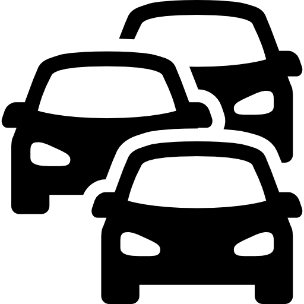

Learn More
Noise Impacts
Learn how chronic exposure to noise negatively impacts health.
Noise Laws
Understand how San Francisco laws limit noise today.

Urban Noise Solutions
Learn what cities might do to better control noise pollution.
Take a Noise Measurement
Try taking your own sound measurement using a mobile phone app.
Local Government Noise Responsibilities
Learn which San Francisco agencies are responsible for controlling noise.
Additional Resources
Find out more about noise and health.